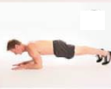
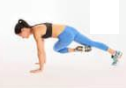
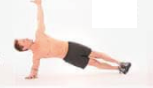
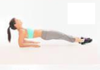

Superman G : Gainage planche sur les mains on monte bras gauche et jambe droite a l'horiontal

Gainage main inversé, ventre tourné vers le ciel

Superman D : Gainage planche sur les mains on monte bras droit jambe gauche a l'horizontal
Rameur, position cuillere, dynamique, on rame
Mountain climber : sur les mains, on monte alternativement les genoux vers les coudes (cardios)

Gainage coude, planche classique

Mountain climber côté exterieur: sur les mains, on monte alternativement les genoux vers les coudes par les côtés (cardios)

Gainage coude droit : de profil en montant la jambe gauche a l'horiontal, et le bras droit a la vertical

Mountain climber côté interieur: sur les mains, on monte alternativement les genoux vers les coudes par les côtés (cardios)
Gainage coude gauche : de profil en montant la jambe droite a l'horiontal, et le bras gauche a la vertical
Araignée, on écarte le plus possible pieds et mains en statique
Rameur statique, position cuillere
Touché de cheville : jambe replié, sur le dos, buste relevé, on vient alternativement toucher chaque cheville
Pausé de coude : sur les mains, on vient poser alternativement le coude droit, puis gauche a terre

Sur une main un pied de profil droit, on vient avec la main opposée toucher le sol, puis le ciel

Sur une main un pied de profil gauche, on vient avec la main opposée toucher le sol, puis le ciel
Gainage coude inversé, ventre tourné vers le ciel
